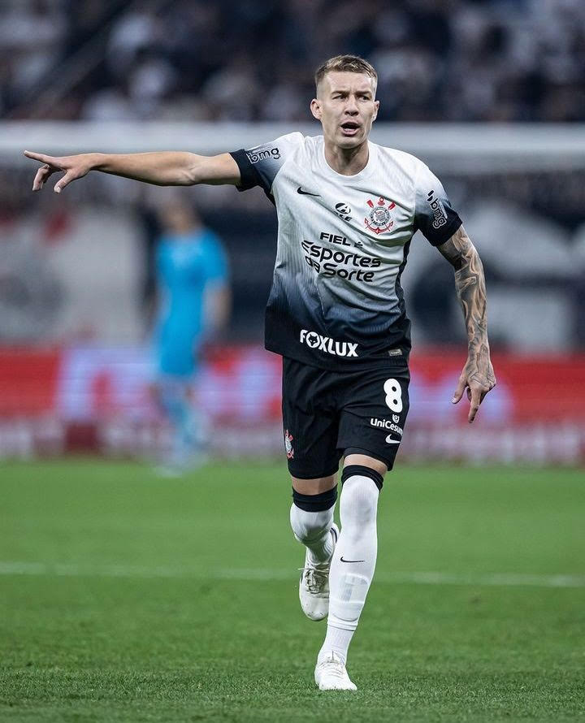

Yuri é o camisa 9 do Corinthians, desde que chegou ao time sempre se entregou e deu seu melhor e nunca abandonou o clube independente de qualquer coisa,sempre irei apoiá-lo, e é um dos meus jogadores favoritos.
Rodrigo Garro
O Garro chegou ao Corinthians e conquistou meu coração na hora mesmo sendo argentino, sempre dá o seu melhor e sempre se esforça pelo time, hoje é o melhor jogador e assumiu o papel de 10 sem esconder, ele demonstra amor ao clube e já virou um dos meus jogadores favoritos.
Hugo Souza
O Hugo chega para substituir o Cássio ídolo do corinthians, e faz esse trabalho muito bem chega, salvando e ajudano o time, evitando muitas derrotas e gols, é o goleiro que precisavamos, também é um dos meus favoritos.
Romero
Romero já tem uma passagem pelo corinthians e boa, acho que a maioria associa ele com o 6x1, é um jogador que nos ajudou muito quando precisavamos e apareceu em momentos importantes, Cristiano Romero é um dos meus favoritos também.
Depay
Depay acabou de chegar e foi uma "grande" contratação, ainda não demonstrou tudo o que pode fazer, espero que jogue e ajude o Corinthians.
Talles Magno
Talles é um bom jogador ajuda e faz gols, acho que pode ajudar bastante o time e suas jogadas indíviduais são boas, gosto dele e da sua comemoração.

Charles
É um volante bom e sempre corre e mostra raça em campo, no começo não achei que ele ia ajudar muito, mas confesso que mudou minha opinião, um ótimo volante e gosto bastante dele.
Matheuzinho ou Matheus França
O Matheuzinho está tendo mais chances agora, mas sempre demonstra amor ao clube e raça por ele, isso já é ótimo, se ele se solidar vai ajudar muito o time.
André Ramalho
Zagueiro bom e sabe jogar, não mostrou tudo que pode fazer mais está fazendo boas partidas espero que continue melhorando e ajudando o time.
Cacá
Não é o melhor zagueiro, mas é o que precisamos, mostra raça vontade, determinação e amor ao clube, ajuda muito nas partidas e me ganhou com a frase "Pa* no ** da mídia e vai Corinthians.".
Matheus Bidu
É um bom lateral e ajuda o time, gosto dele e me passa mais confiança que o hugo, se melhorar nas tomadas de decisões irá melhorar bastante, é bom ofensivamente gosto de quando ele sobe para atacar.